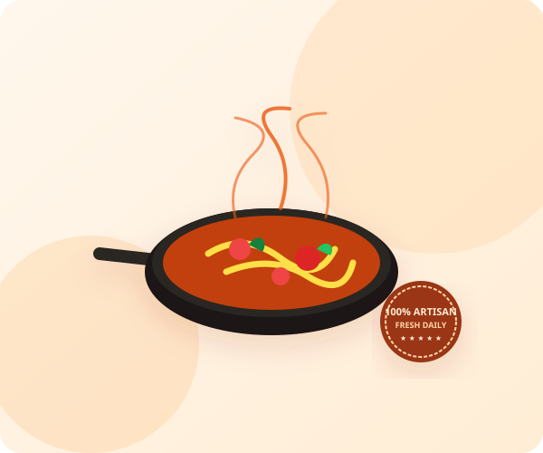

Fresh Handmade Pasta
Crafted every sunrise with Italian Tipo 00 flour, free-range egg yolks, and traditional bronze dies.
Authentic Italian Heritage • Since 1984
Experience authentic Italian gastronomy: stone-milled semolina pasta rolled fresh every morning, naturally fermented sourdough pizzas baked in an oak-fired oven, and time-honored Tuscan specialties.

Crafted every sunrise with Italian Tipo 00 flour, free-range egg yolks, and traditional bronze dies.
Imported volcanic stone oven from Naples baking sourdough pizzas in under 90 blistered seconds.
Sun-ripened tomatoes grown in rich volcanic soil near Mount Vesuvius for unmatched sweetness.
Custom thermal insulated packaging ensuring your dishes arrive at restaurant piping hot temperature.
A curated preview of our guests' highest-rated Italian culinary dishes. Prepared with passion and seasonal ingredients.
Everything you need to know about table reservations, our delivery process, and dietary accommodations.
We cook our artisanal pasta slightly al dente and package the sauces in temperature-regulated steam-release containers. When your courier arrives within our 35-minute radius, the dish completes its gentle rest to absolute perfection.
Yes! We take dietary safety very seriously. Over 60% of our menu items are vegetarian-friendly, and we offer organic corn/rice flour pasta substitutes for nearly every pasta dish upon request in your checkout chef notes.
You can enter coupon codes like GUSTO10 (10% off), TASTY20 (20% off), or FREEDELIVERY directly in the Order & Checkout page. Our rest-parameter discount engine dynamically calculates the deduction in real time!
Absolutely. Visit our Contact & Reserve page to submit a party booking request. For groups larger than 8, our sommelier and executive chef offer custom tasting menu pairings.